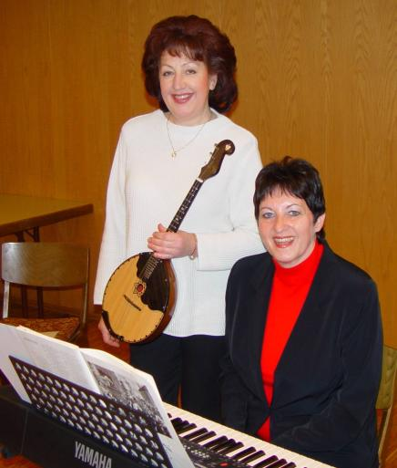

Lesung - "Wege zum Glück" Obersülzen. Großen Zuspruch fand die Lesung mit Musik am 29. März im Dorfgemeinschaftshaus in Obersülzen. Dr. Marianne Baun las ihre neuen Texte zum Thema "Wege zum Glück". Das Presbyterium war glücklich, in der Passionszeit die Autorin zu diesem Thema gewinnen zu können. Dies sagte auch die Pfarrerin Christine Dietrich bei der Begrüßung. Beim Abendgeläut der Kirchenglocken las die Autorin Essays, Gedichte und autobiografische Erzählungen mit den Themen: Wege zum Glück, Träumen, Leben, Glaube, Fliegen, um einige zu nennen. Passend zu den Texten wurde wunderschöne Musik gespielt, gespielt von der inzwischen in Deutschland lebenden Russin Natascha Matthaei und der Autorin Marianne Baun. Sie spielten auf Domra (russ. Langhalslaute) und Klavier Stücke von Händel, Bach, Mozart sowie Musikstücke aus Russland, Litauen und Schweden. Es war ein unvergesslicher Abend. Zum Abschluss gab es anregende Gespräche bei russischem Tee und Gebäck. (Wochenblatt für Grünstadt vom 3. April 2003) 
Obersülzen: Lesung mit Marianne Baun Seit einigen Jahren schreibt sie autobiografische Bücher. Ihr neuestes Werk mit dem Titel "Wege zum Glück" stellte die im Donnersbergkreis beheimatete Marianne Baun am Samstag in einer beeindruckenden Autorenlesung im Obersülzer Dorfgemeinschaftshaus vor. "Was macht uns eigentlich wirklich glücklich?", fragte zur Begrüßung Pfarrerin Christine Dietrich, die zusammen mit der protestantischen Kirchengemeinde zur Lesung eingeladen hatte. Die Autorin beschrieb die Wege zum Glück überwiegend in einzelnen, in sich abgeschlossenen Texten, Aphorismen oder aphoristischen Essays. Zur Sprache kamen Themen, die ihr wichtig sind: Glück, Träumen, Leben, Zeit, Musik, Glaube, Liebe, Freundschaft oder Dankbarkeit. "Wir können uns aber nicht ständig glücklich fühlen. Der Sinn liegt in der Suche. Glück ist Helfen, Hoffen, Vertrauen, Dankbarkeit. Glück ist Leben", liest Marianne Baun. Auch der Glaube ist ihr wichtig - " ...da ist ein Herz, das lieber verwundbar ist als hart ...". Unter das "Träumen" stellt sie den Vers "Wer keinen Mut zum Träumen hat, hat auch keinen Mut zu kämpfen, zum Leben", sagt sie. Auch die Musik sei ein Teil ihres Lebens, sie sei Gegenwart, Vergangenheit und Zukunft. Musik setzte sie, als promovierte Sonderschulpädagogin als Therapie bei Kindern ein und auch ihre eigene Kindheit wurde geprägt von Musik. Äußerst einfühlsam erinnert sich Marianne Baun an ihren Großvater, die Faszination, die von seinen Instrumenten geige und Klavier ausging und sie schon als Kind beflügelte. "Er hütete diese Instrumente wie sein Heiligtum", weiß sie noch sehr genau. Und nachdem sie zum zehnten Geburtstag ein Klavier bekam, stellt sie heute fest: "Es gab nie ein schöneres Geschenk für mich." Dankbarkeit wird sichtbar. Kraft schöpfende Anstöße hat die Autorin vermittelt, etliche Wege zum Glück aufgezeigt, die sich lohnen, zu begehen. Exzellent gestaltete die Autorin selbst auf dem Keyboard, zusammen mit Natascha Matthaei auf der Domra (russische Laute), mit klassischen Kompositionen verschiedener Länder die musikalische Umrahmung, wobei das bewegende "Ave Maria" in der Zugabe zu einem zusätzlichen Glanzpunkt avancierte. Im Anschluss wurden russischer Tee und Gebäck gereicht, die Zeit für Gespräche genutzt. (Die Rheinpfalz vom 2.4.2003)
|
||